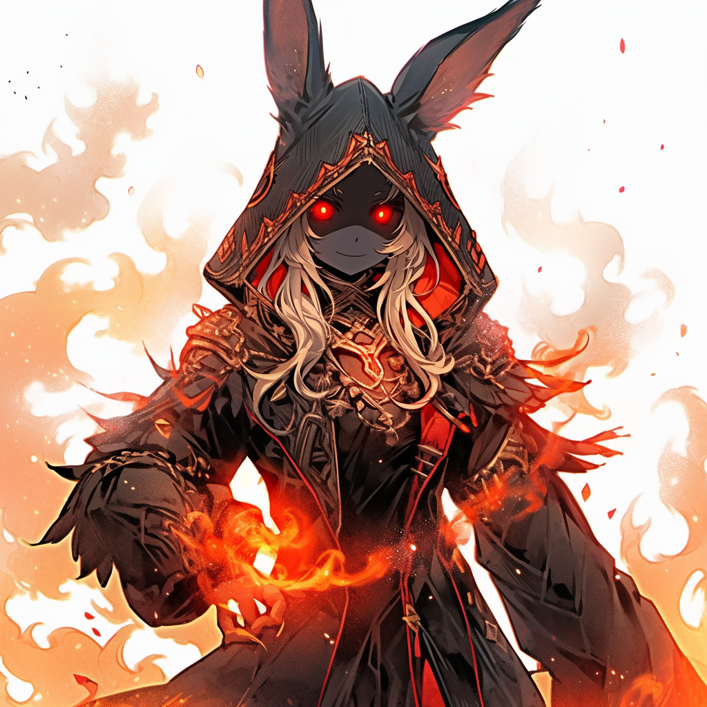
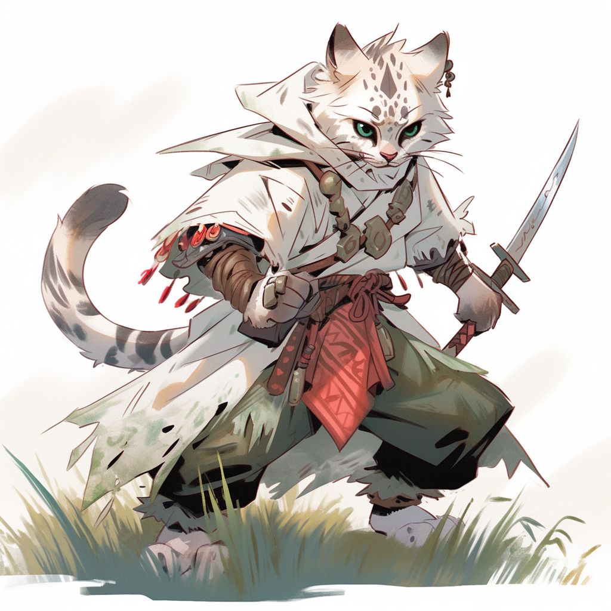
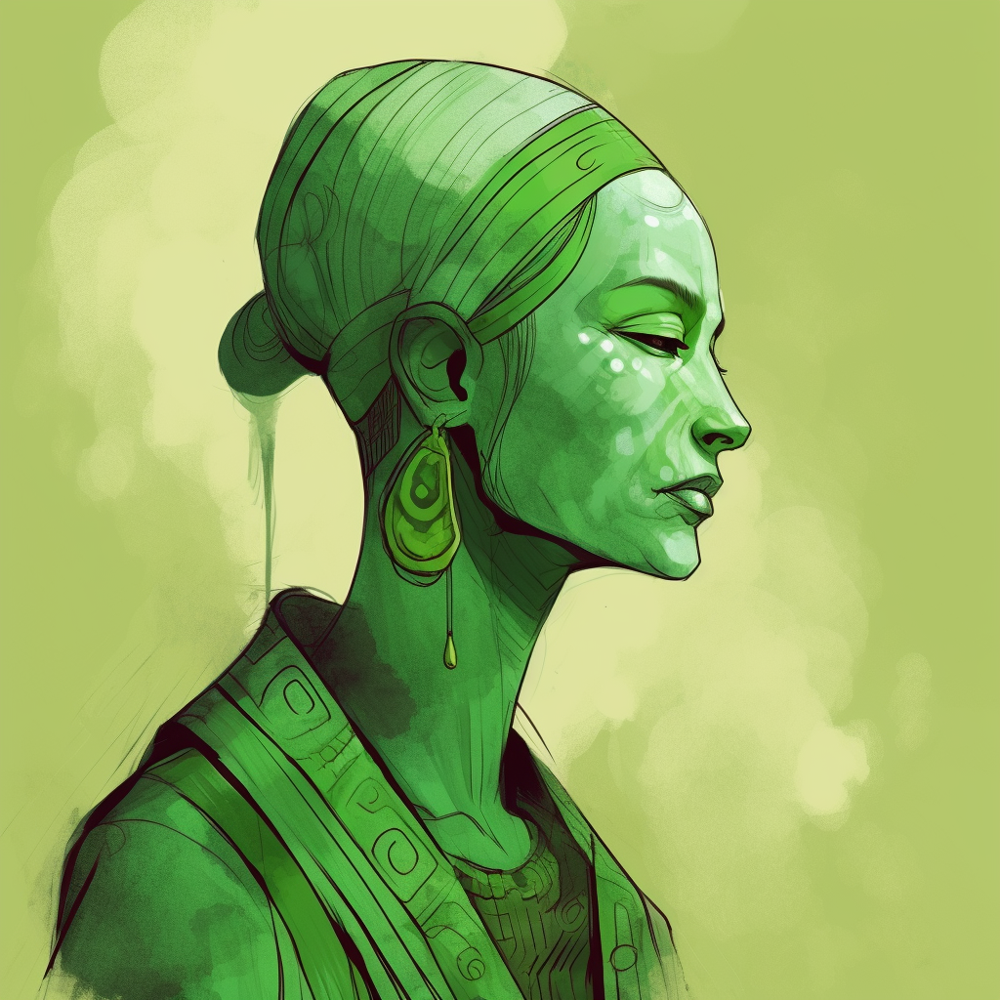
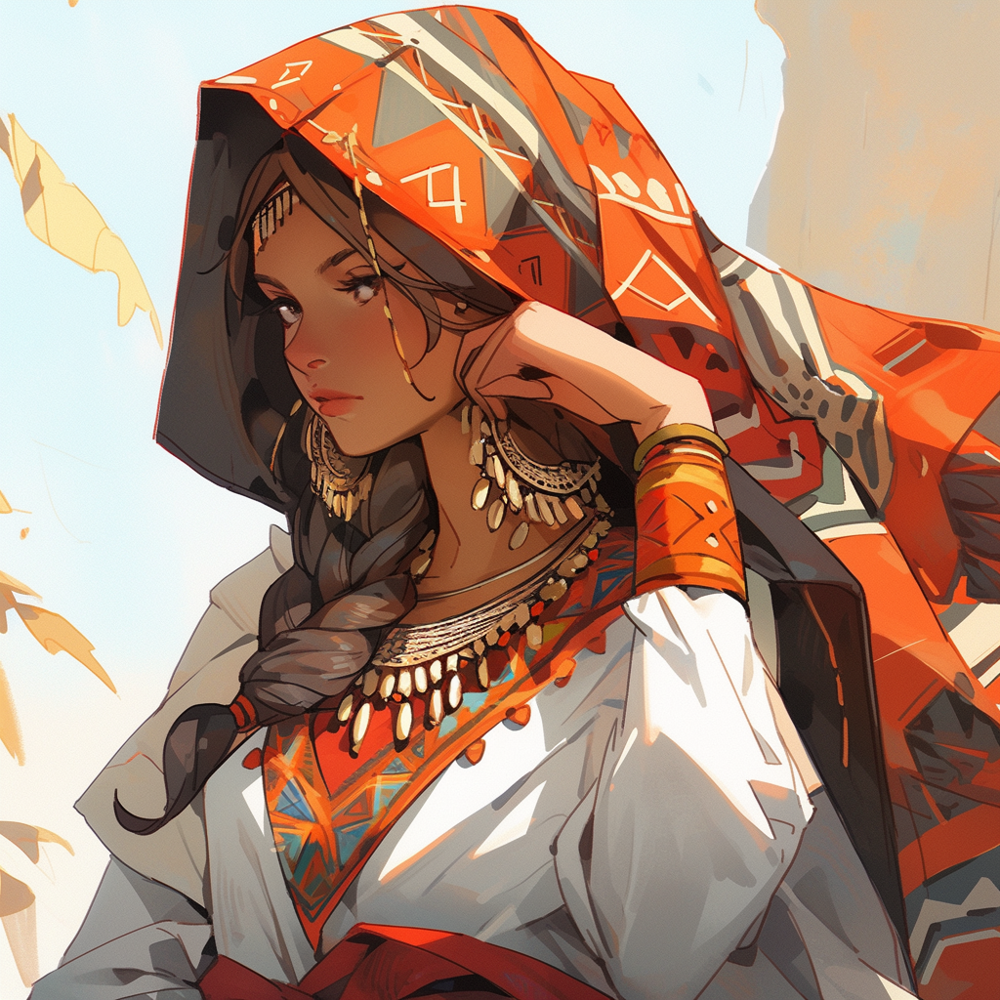
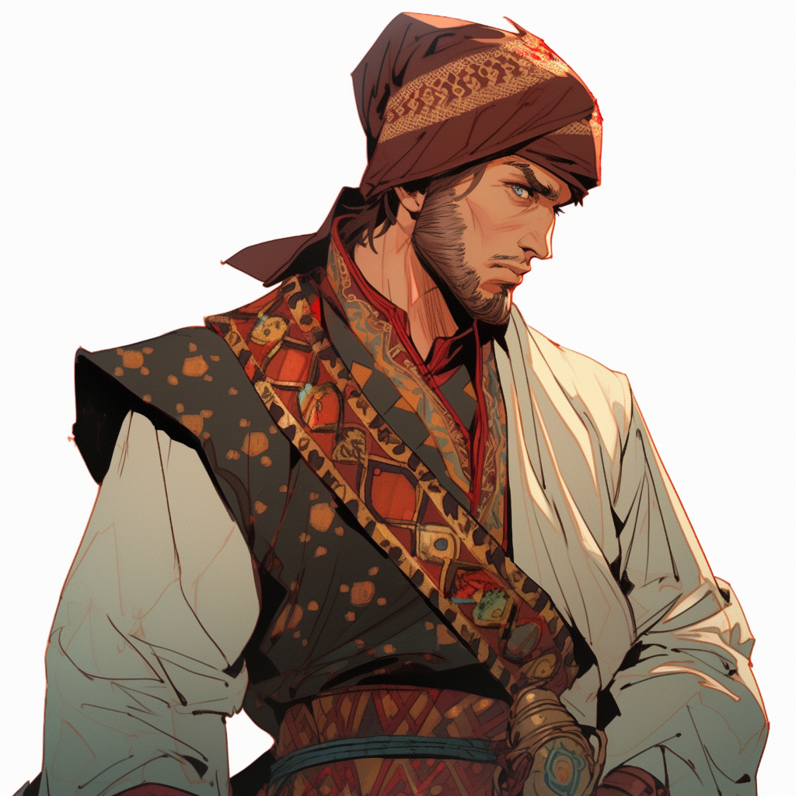

The Black Hare

Bane of Shaar
Enigmatic Evildoer
Enigmatic Evildoer
A mysterious figure whose first recorded appearance was leading an
army of spellhaunts at the razing of Kot Maikaan. Since then, they
have been seen in various locations, pursuign their own agenda.
There seems to be a plan to their actions, but the pattern has not
yet made itself evident.
The Sky Witch
Big Damn Hero
Proud Mom
Proud Mom
Zofia Corrada is a famous hero of the south, and captain of one of
the few remaining Halruaan airships (also called
The Sky Witch. Her name and stories are well known
throughout the south. She participated in the Liberation of
Sheirttalar, the Shellbreaking of Chult and many other adventures
of note.
The Protector

Defender of Silverside
Probably a Dragon
Probably a Dragon
Master of Silvergard, the Protector holds no official role in the
government of Silverside, save that she is the supreme commander
in time of war. Despite this, her voice carries great weight
across the city, as it's generally accepted that her presence has
been keeping the Emirates from crossing the neck.
The Soveriegn

Enigmatic Lord of Fireside
Skyfire Puppet
Skyfire Puppet
The ruler of Fireside, details around his identity are a mystery,
though it is presumed he is Pasha (and, by extension, a greater
genasi), though some theorize he may even be one of djinnkind, or
might even be a mask worn by multiple djinn. Within Fireside, his
power is absolute, but his autonomy is subject ot debate.
"Ghost in Moonlight"

International Tabaxi of Mystery
Dangerously Handsome
Dangerously Handsome
Three times now, Shards has seen a handsome male Tabaxi, only
slightly taller than her. The first time, as the Tomb of
Nazil-Gahn was collapsing behind her, she saw him running out of
another exit, on a hillside far away. The second time, in the
jungles of Chult, he rode swiftly past on a dinosaur. More
recently, she was sure she saw him as she was soundlessly moving
through the streets of Beacon. He walked down the middle of the
street like he owned it, his rapier flashing in the moonlight, his
white fur almost glowing. In her mind, she calls him Ghost in the
Moonlight, but she does not know who he is, where she could find
him, if he is smart or funny, or if he is as fascinated with her
as she is with him.
Hidden Ziggurat Clan
Tabaxi Clan of Archaeologists
Originally from distant Mulhorand, the clan fled the fall of their
home, and answered the call to investigate the fall of Mezro, and
spent more than a decade studying it's "ruins". With Mezro's
return, the clan has scattered across the south, and members can
be found in many obscure corners. Some known members include Rain
in the Desert (Rain),Illuminated Papyrus (Papyrus) (Female);
Layers of a Tel (Tel) (Female); Musical Riddle (Riddle) (male);
Sparks of Flint (Flint) (Male).
Garlan Silvertoe
Former Sky Pirate
Respectable Citizen
Respectable Citizen
Used to fly with The Sky Witch, until he retired with his share to
Beacon. He’s living a quiet life of luxury but he’s got a past,
and we all know how easy to escape those are.
Janara Halasaphyrii
Former Knight of Tethyr
Agent of the Council
Agent of the Council
Janararanmujan Halasaphyrii (familiar friends call her Janara and
so can you), a former Knight of Tethyr who has a relationship with
the Silverside Council (and who may have been an old flame, but
Garak does not confirm this). She’s got Garak’s number and knows
how to press those buttons in #4 if she’s looking to get him under
contract for a bit of Council business.
Shadow Dalton
Captain of The Hellish Scorn
Captain Shadow Dalton, Captain of The Hellish Scorn and
Bianca's on-again, off-again paramour. They have a great time
together and then don’t see each other for a year.
Art of Shadows
Ranger Captain of Mezro
Mediocre Parent
Mediocre Parent
Shard's Father, his clan was responsible for guarding Mezro, and
continued to guard its ruins. His forbidden romance with her
Mother (Rain in the Desert) lead to years of happiness which wer
disrupted with Mezro's return and the Hidden Ziggurat Clan's
departure. He has remained ic Chult, and currently is one of the
officers overseeing the returned city's protection.
Geye
Warforged Troublemaker
Heart Not Literally Made of Gold
Heart Not Literally Made of Gold
Geye is warforged from who knows where, depending on the story he
is telling this week. He is always working a scheme or an angle,
but has a heart of gold (both figuratively and literally, he shows
it to people as a party trick). Redge thinks the world of him and
they have a past that forged a bond that transcends that whatever
antics Geye gets up to. He is often the source of side jobs for
Redge, only some of which are some variation of helping Geye get
out of trouble from his latest great idea.
Corrin
Harengon Entrepeneur
Fabien & Jax's brother, Corrin was very young when the family fled
Shaar, so he has little attachment to the homeland, and considers
himself a silverside native. He has been much less driven to
things like "danger" or "revenge" than his siblings. Instead, he
has turned his attention to business, where his success has been
mixed. He has been broke and rich multiple times in the past few
years, and his plans have ended up requiring help from his
siblings more than once.
Sandy Bottom
Street Performer
Perfect Idiot
Perfect Idiot
Alixander “Sandy” Bottom, owner and lead player of Sandy Bottom’s
Perfect Idiots, a street performance troupe who’ve gotten out of a
few scrapes thanks to Garak showing up, and who Garak has used as
some additional watchful eyes when his work in the city has turned
a bit more covert
Zendon Smoothhands
Halfling Reverse Fence
Absolutely Legitimate
Absolutely Legitimate
Frequent source of paying jobs for Shards, Smoothands has a
standing list of items he wants found, and will fund recovery jobs
when appropriate. By extension, he is an (expensive) source for
rare items of many types
Jade

Museum Curator
An earth Genasi curator at the Celestial Museum of Ancient Wisdom
and Knowledge in Fireside. Sometime source of jobs and
opportunities for Shards.
Bimps McGullicuty
Goblin Fence
Former Mercenary
Former Mercenary
Goblin former quartermaster of the Chill mercenary
company-turned-fence (Krongo does not fully understand what a
fence does)
Zeyada

Keeper of Orphans
But Not In A Bad Way
But Not In A Bad Way
Runs an orphanage in Fireside
The Grime Brothers
Still Mad About Their Pet
Also About Everything Else
Also About Everything Else
First encounter in A Slow Boat to Ankhapur, they had a
foolproof plan to distract a slow boat with thier pet, and make
off with a ton of booze and maybe some snacks. Regrettably, they
had not anticipated who was on the boat.
The Archmage
Arcane Asshole
Agenda Unknown
Agenda Unknown
First appeared in The Mountain of Meat, looking to harvest the
creature.
Kezzel Lockhart
Owner of Lockhart Assets
"There's a Market For It"
"There's a Market For It"
Lockhart is a professional scavenger. His company buys lowest-bid
items no one else has an interest in and finds ways to squeeze a
little more money out of them. He's shady and opportunistic, but
not truly criminal.
Liz
Lockhart's Secretary
Logistics and Business Sense
Logistics and Business Sense
Liz likes to play up the "dumb, pretty secretary" bit to get
people's guards down, but those in the know understand that her
skill with the numbers is a big part of Lockhart's success.
Hugh Bitmer

Scion of Not Much
The Bitmer's were once a well off Bey family with ambitions, and
were patrons of academics before the house went into decline. Hugh
is the last scion of the house, having inherited little more than
the name, the townhouse, and the various curios in the basement
which he auctioned off.
Yuka Hatal
Chultish Merchant
Sponsor of the Landlocked Shipwreck
Blank
Blank
Blank